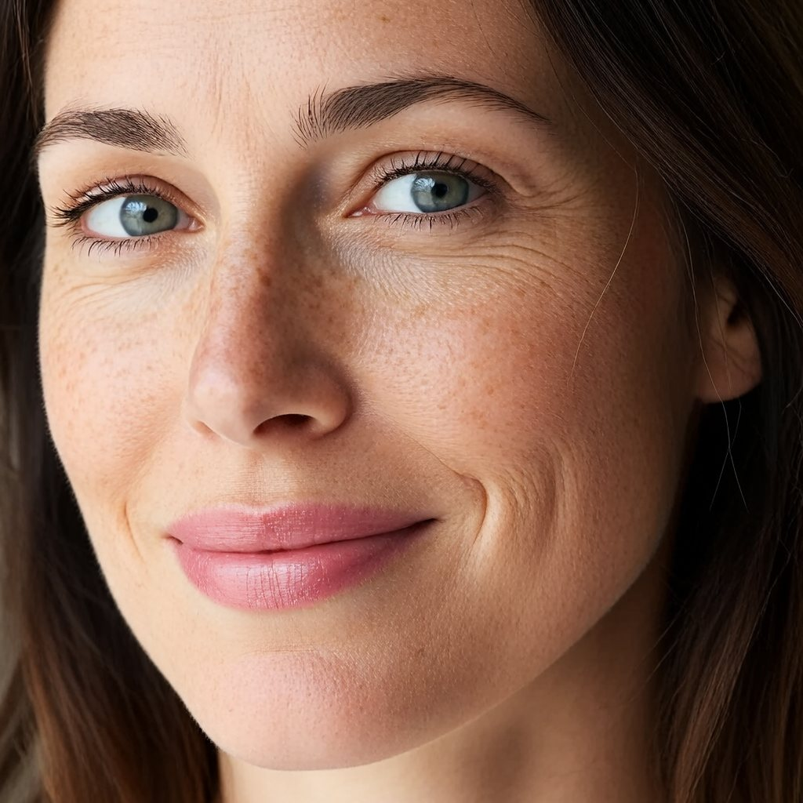
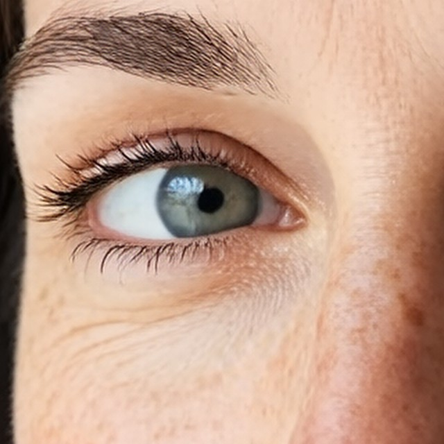
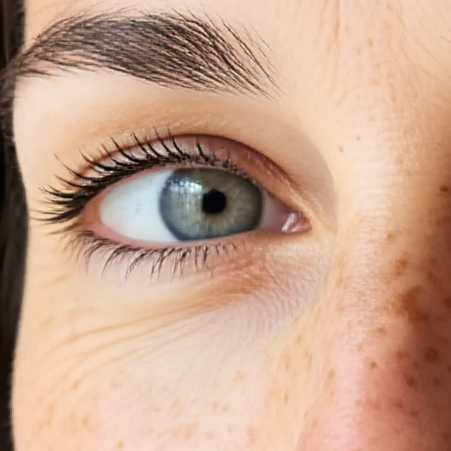
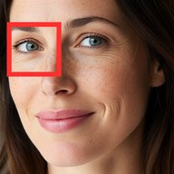

Comparing still images
Pictures made with the same prompt and seed, side by side. The first half compares the image models, the second the ways to enlarge a picture. How to use them is on Making and editing still images.
Every picture on this page was generated by AI (H3cApp's image generation, with P-H3-Image and MiniMax H3 Image. Powered by MiniMax H3), saved as JPEG for the page.
Comparing the image models
The same prompt and seed, given to the image model in its three forms, each making a 1024×1024 picture. Choose a subject and a model for each side.


| Model | Steps | Time for 1024×1024 | Good for |
|---|---|---|---|
| P-H3-Image | 8 | about 35 s | Polished photographs, fine detail, Extra large (about 8 megapixels) |
| MiniMax H3 Image | 6 | about 32 s | Unretouched, natural photographs; edits with many references |
| P-H3-Image (video model and LoRA) | 8 | about 1 min 10 s | Keeping the download to about 10 GB (close to P-H3-Image in look, about twice the time) |
The two forms of P-H3-Image make slightly different pictures from the same seed, because they hold the weights differently (weights of its own, or the video model's with a LoRA). Neither is the right one.
Comparing the ways to enlarge
The four P-H3-Image pictures above (1024×1024), each enlarged 2x (2048×2048) by every method. What you compare is a 640×640 detail, not shrunk, of the part that is 320×320 in the original. The red frame in the small picture under them shows where it is.
Enlarging images arrives in the version after v0.10.0. It is under 高解像度化… (Enlarge…) in the preview, or その他 (More) in プロジェクトの動画と画像… (Project videos and images…). The enlarged picture joins the project as a new image, and the original stays.



| Method | Time, 1024×1024 to 2x | Largest size | Result |
|---|---|---|---|
| Standard | about 1 s | 4096 pixels a side | Looks the same, slightly soft |
| MetalFX | about 1 s | 4096 pixels a side | Almost the same as Standard |
| Real-ESRGAN General | about 2 s | 4096 pixels a side | Sharper, but smooths skin and fur and breaks up fine patterns |
| Real-ESRGAN Anime | about 2 s | 4096 pixels a side | Crisp lines and colors in illustrations; photographs look painted |
| SwiftVR | about 20 s | 4096 pixels a side | Smooth; adds little detail to a still picture |
| SwiftVR at 4x, then shrunk | about 43 s | 4096 pixels a side | True to the original, close to Standard |
| Redraw with the image model | about 1 min 20–30 s | About 8 megapixels (2912×2912 and the like) | Adds the most detail; the stronger, the further from the original |
The larger the redraw, the clearer its effect. P-H3-Image does best at about 8 megapixels, so redrawing 1024×1024 into 2912×2912 draws in even the wrinkles and spots of the skin (about 2 min 40 s on an M5 with 24 GB).
Choosing how to enlarge
Choose by what you want. The higher rows finish sooner.
| What you want | Method |
|---|---|
| A larger picture right away, looking the same | Standard |
| Crisper lines and colors in an illustration or anime, without changing the drawing | Real-ESRGAN Anime |
| A photograph a little crisper and true to the original | SwiftVR at 4x, then shrunk |
| New detail in a photograph (skin, hair, fur, the strokes of lettering) | Redraw with the image model, standard |
| Detail, while changing faces and patterns as little as possible | Redraw with the image model, gentle |
| As large as possible while adding detail | Redraw with the image model (up to about 8 megapixels) |
- A redraw is a generation. It uses the original picture's prompt and seed, and the image model draws the detail anew. Faces, lettering and patterns can change a little, so look at the result before you use it. An imported picture has no prompt of its own: write what it shows in the image prompt on the panel, then redraw.
- Mind lettering and fur with Real-ESRGAN. It sharpens, but fine patterns such as the grain of chalk or fur tend to set into shapes the original doesn't have.
- Unsure? Make two. Every method makes a new picture and keeps the original, so you can make one with Standard and one with the redraw and compare them.
How this comparison was made
- Pictures: the four subjects, made at 1024×1024 with P-H3-Image (its own weights), MiniMax H3 Image and P-H3-Image (the video model's DiT with a LoRA), with the same seed for each subject (11 to 14). The prompts are below.
- Enlarging: the four P-H3-Image pictures, each doubled (2048×2048) by every method. The redraws use P-H3-Image (its own weights) with the original's prompt and seed. The details compared are 640×640, not shrunk, of what is 320×320 in the original.
- Setup: a Mac with an M5 and 24 GB of memory. Made during development with the same processing as the version after v0.10.0: the pictures and the redraws from the command line, the other enlargements through the app's API. Each was made once, with no picking.
- The same prompt and seed can give different results on other Macs or settings. The page shows JPEGs, so the finest grain is a little less than in the actual PNGs.
Prompts
- Portrait (seed 11):
Close-up portrait photograph of a woman in her thirties with freckles, face and shoulders filling the frame, natural skin texture with visible pores, fine lines near the eyes, a few stray hairs, no makeup, soft window light from the left, 85mm lens, sharp focus, natural colors, no retouching. - Lettering (seed 12):
A photograph of a chalkboard sign standing outside a small bakery in the morning, hand-lettered in white chalk with the words "FRESH BREAD" and below it "OPEN 7AM", a wicker basket of baguettes beside it on the cobblestones. - Anime-style illustration (seed 13):
An anime-style illustration of a girl with short black hair in a yellow raincoat holding a red umbrella on a rainy city street at night, neon signs reflected in the puddles, clean line art, vivid colors. - Texture (seed 14):
A photograph of a tabby cat curled up asleep on a chunky cream knitted blanket, soft afternoon window light, every strand of fur and every loop of wool sharply visible.